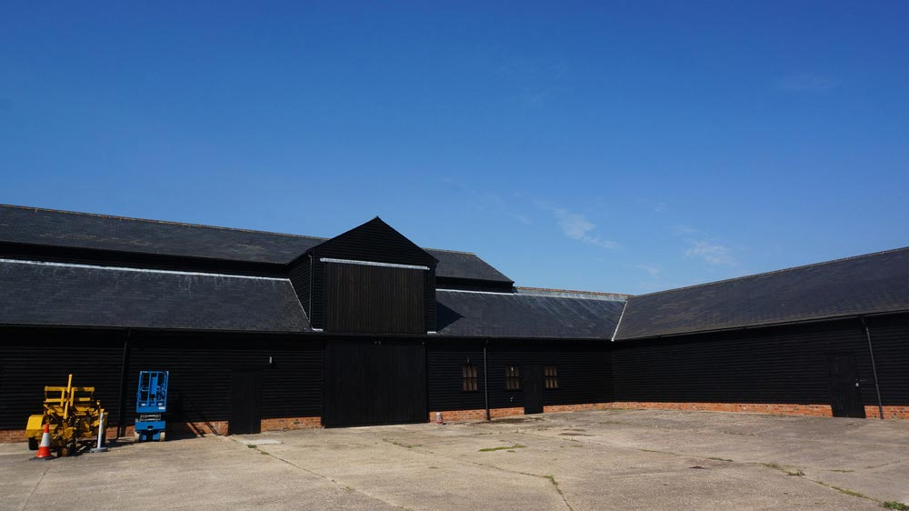
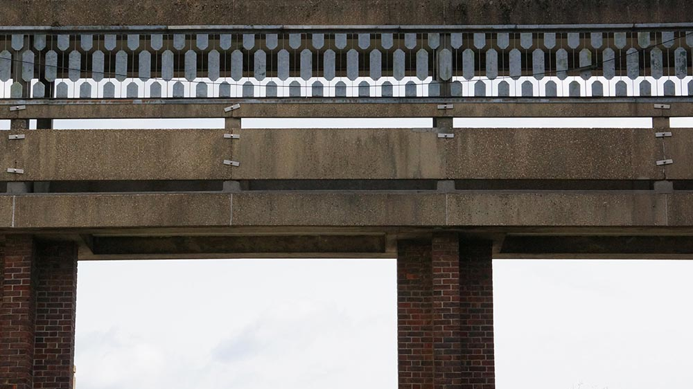
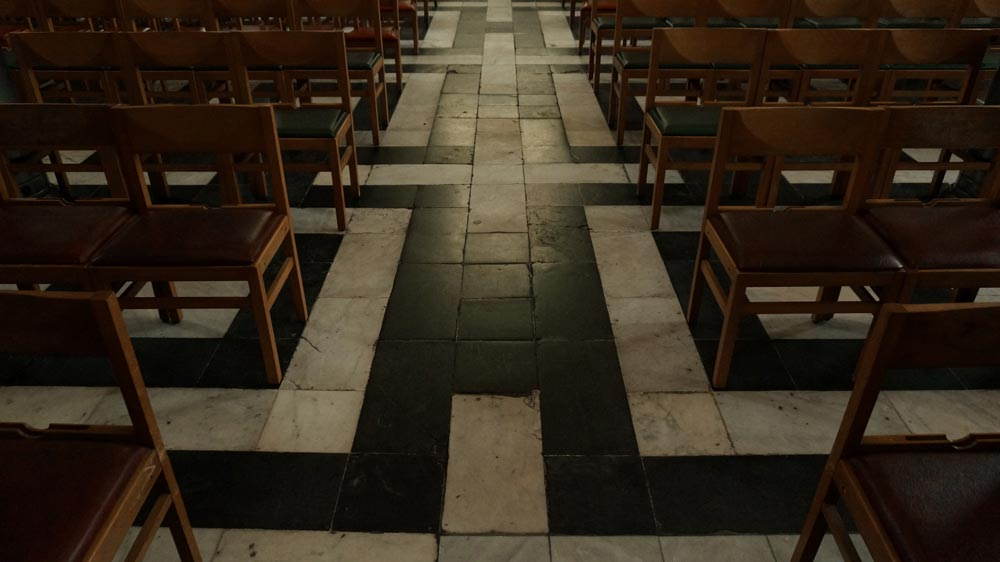
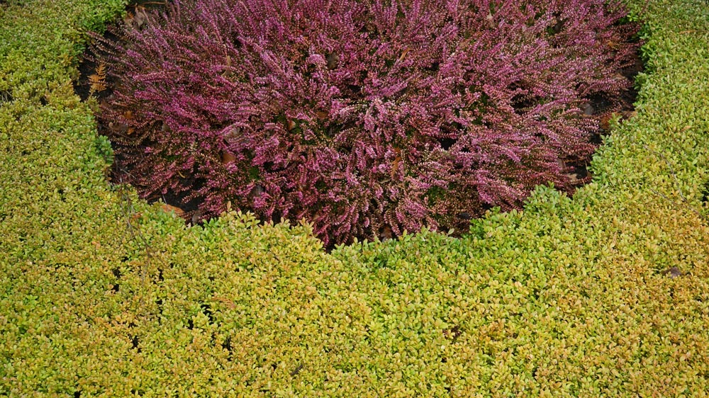

When you’re living in the same city for ten years, your surroundings become so familiar that the ability to find inspiration in everyday life is desensitised. For a while I was content with the visual wealth of the internet, but after some reflection I realised that digital exposure could not substitute for a real environment. I’m not sure if I was fully aware of this at the time of my exchange application, but I felt at least intuitively I needed a change. So I lived and studied in London between September 2013 and mid January 2014.